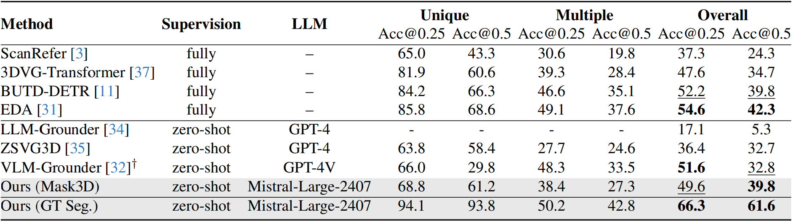
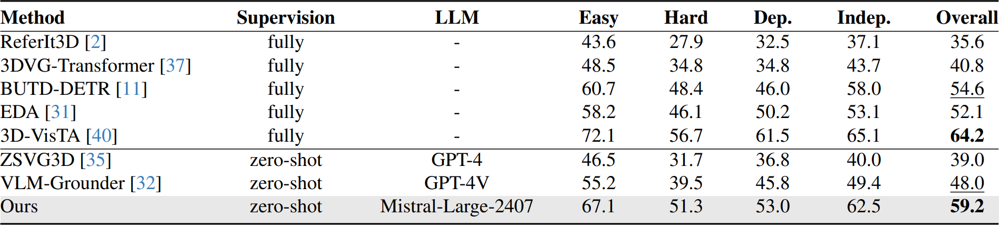

Gallery
Abstract
3D visual grounding (3DVG) aims to locate objects in a 3D scene with natural language descriptions. Supervised methods have achieved decent accuracy, but have a closed vocabulary and limited language understanding ability. Zero-shot methods mostly utilize large language models (LLMs) to handle natural language descriptions, yet suffer from slow inference speed. To address these problems, in this work, we propose a zero-shot method that reformulates the 3DVG task as a Constraint Satisfaction Problem (CSP), where the variables and constraints represent objects and their spatial relations, respectively. This allows a global reasoning of all relevant objects, producing grounding results of both the target and anchor objects. Moreover, we demonstrate the flexibility of our framework by handling negation- and counting-based queries with only minor extra coding efforts. Our system, Constraint Satisfaction Visual Grounding (CSVG), has been extensively evaluated on the public datasets ScanRefer and Nr3D datasets using only open-source LLMs. Results show the effectiveness of CSVG and superior grounding accuracy over current state-of-the-art zero-shot 3DVG methods with improvements of +7.0% (Acc@0.5 score) and +11.2% on the ScanRefer and Nr3D datasets, respectively.
Handling More Complex Queries

Quantitative evaluation results on the ScanRefer dataset.

Quantitative evaluation results on the Nr3D dataset.

Some grounding results and comparison with ZSVG3D.
BibTeX
@misc{yuan2024solvingzeroshot3dvisual,
title={Solving Zero-Shot 3D Visual Grounding as Constraint Satisfaction Problems},
author={Qihao Yuan and Jiaming Zhang and Kailai Li and Rainer Stiefelhagen},
year={2024},
eprint={2411.14594},
archivePrefix={arXiv},
primaryClass={cs.CV},
url={https://arxiv.org/abs/2411.14594},
}